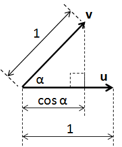
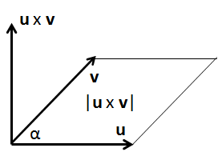

Figure 1: Rotation of a rigid body such that a reference point moves from "A" to "B"
For this simple case, We've kept the axis of rotation along the vertical axis of the cylinder as shown in Figure 2. But that is not a requirement for the underlying mathematics to work. So long as we have a rigid body, we can always describe the rotation in the manner that follows.
Figure 2: Overlay of Cartesian Coordinates onto System of Figure 1
Figure 3 deals with the same rotation, but focuses on the fact that we have a rotation plane that is perpendicular with the axis of rotation. The movement of the cylinder is a rotation equal of angle α, about the axis of rotation, where the point of interest is constrained to lie within the rotation plane.
Figure 3: Looking at Just the Rotation Plane and Axis of Rotation
The rotation is fully described by the three components of the normalized rotation axis and the rotation angle α, which may be in radians or degrees, depending upon the system in use.
Figure 4: OpenGL ES Drawing of a Cylinder
In this case, We've modeled the top and bottom of the cylinder with 6 triangles each, and the other side is modeled using a total of 16 triangles arranged in a strip. OpenGL ES is optimized to draw such structures efficiently, and it is possible to then "render" textures onto the drawn surfaces. What's really neat is that once drawn, we get a reasonable approximation of the cylinder of Figure 1 simply by doing a -30 degrees rotation about the Z axis (presumed to be out of the page) using a single OpenGL ES instruction:
At this point, you're probably thinking: "Yeah, that makes sense, but how does it work at the math level?" This is the where we need to introduce the concept of a quaternion. Conceptually, a quaternion encodes the same axis and angle as above. But for mathematical reasons it deals with 1/2 of the rotation angle as shown below.
Figure 5: System of Figure 4 in Terms of Quaternion Components
Before overwhelming you with the underlying math, you should know that unless you are planning to implement your own quaternion utility library, you only need to know a few key points:
We will be presenting the mathematical definition first, and without proof. If you really, REALLY want to know the underlying theory, let me suggest that you pick up a copy of Jack Kuiper's excellent text: Quaternions and Rotation Sequences. This appears to be (by far) the most extensive treatment on the topic, even while remaining very readable.
Notice that rotation quaternions deal with α/2, not α. We can define a rotation quaternion "q" in one of several equivalent fashions
| q = (q0, q1, q2, q3) | (Eqn.1) |
| q = q0 + q, where q = iq1 + jq2 + kq3 | (Eqn. 2) |
| q = cos(α/2) + u sin(α/2), where u is the vector axis of rotation | (Eqn. 3) |
In this discussion, use the quaternion form where q0 = cos(α/2). Some texts will reorder the quaternion components so that the vector portion q is contained in q0-2 and q3 = cos(α/2). Be sure you understand which form your text/software library supports.
Quaternions are a form of hyper-complex number where instead of a single real and single imaginary component, we have one real and THREE imaginary components (i, j & k). Rules for these imaginary components are:
| i2 = j2 = k2 = ijk = -1 | (Eqn. 4) |
| ij = k = -ji | (Eqn. 5) |
| jk = i = -kj | (Eqn. 6) |
| ki = j = -ik | (Eqn. 7) |
Two quaternions, p and q, are equal to one another only if the individual components are equal. You add two quaternions by adding the individual components. If
| p = p0 + ip1 + jp2 + kp3; and | (Eqn. 8) |
| q = q0 + iq1 + jq2 + kq3 | (Eqn. 9) |
Then
| p + q = (p0 + q0) + i(p1+q1) + j(p2+q2) + k(p3+q3) | (Eqn. 10) |
The addition operation commutes. That is p+q = q+p. Multiplication of a quaternion by a scalar real number is trivial, just multiply each of the four components by the scalar. Multiplication of two quaternions is NOT so trivial:
|
pq = p0q0 - p.q + p0q + q0p + p x q |
(Eqn. 11) |
Multiplying one quaternion by another quaternion results in a third quaternion. Notice that the 1st two components (p0q0 - p.q) makes up the scalar portion of the result, and the last three (p0q + q0p + p x q) comprise the vector portion. The quaternion product operation is not commutative pq≠qp. Order matters. Multiplication of two quaternions includes scalar, cross product and dot product terms. Unless you are writing your own quaternion library, you are likely never to use the expression above. Instead, you will use a function that does the quaternion multiplication for you.
The complex conjugate of
| q = q0 + iq1 + jq2 + kq3 is q* = q0 - iq1 - jq2 - kq3 | (Eqn. 12) |
Related to this, we have
| (pq)* = q*p* | (Eqn. 13) |
| q+q* = 2q0 | (Eqn. 14) |
| q-1 = q* for any unit quaternion | (Eqn. 15) |
Eqn. 15 is interesting. If you think of a quaternion as a rotation operator, it says you can reverse the sense of rotation by inverting the axis of rotation. Given our usual standard of using the Right Hand Rule to describe the polarity of rotations, this makes perfect sense. Reversing the direction of the axis is equivalent to reversing the direction of rotation.
Another interesting take on the above is that rotation quaternions are not unique:
| q = -q | (Eqn. 16) |
Any rotation quaternion can be multiplied by -1 and still result in the same rotation! That's because we reversed both the angle AND the axis of rotation (which then cancel each other). It is conventional therefore to remove the ambiguity by negating a rotation quaternion if its scalar component is negative.
At this point, you are surely wondering why in the world you might, or might not, choose to use quaternions instead of rotation matrices. Here's a brief summary of the pros and cons:
| Topic | Quaternion | Rotation Matrix | ||||||||||||||||||
|---|---|---|---|---|---|---|---|---|---|---|---|---|---|---|---|---|---|---|---|---|
| Storage | Requires 16 bytes of storage in single precision floating point (4 elements at 4 bytes each) | Requires 36 bytes of storage (9 elements at 4 bytes each) | ||||||||||||||||||
| Computation (for 2 sequential rotations) | 4 elements each requiring 4 multiplies and 3 additions = 28 operations | 9 elements, each requiring 3 multiplies and 2 additions = 45 operations | ||||||||||||||||||
| Vector rotation | Rotating a vector by pre- and post-multiplication of quaternion requires 52 operations | Rotating a vector via rotation matrix requires 15 operations (3 elements each requiring 3 multiplies and 2 additions) | ||||||||||||||||||
| Discontinuities | Generally, we force the scalar part of the quaternion to be positive, which can cause a discontinuity in the rotation axis (it flips). | None | ||||||||||||||||||
| Ease of Understanding | Generally takes a lot of study to understand the details | Easily understood by most engineers | ||||||||||||||||||
| Conversion | From rotation matrix =
q0 = 0.5 sqrt(m11 + m22 + m33 + 1) q1 = (m32 - m23) / (4q0) q2 = (m13 - m31) / (4q0) q3 = (m21 - m12) / (4q0) (Eqn. 17) |
RM =
(Eqn. 18) |
Equations 17 and 18 are consistent with regards to direction of rotation. If instead of rotating a vector in a fixed frame of reference, you rotate the frame of reference itself, then need to use the transpose of Eqn. 18 and invert q1, q2 and q3 in Eqn. 17.
Returning to the quaternion rotation operator W = qVq*, note that V needs to be expressed as a quaternion of the form [0, vx, vy, vz], and the multiplications are quaternion multiplies as defined in Eqn. 11. q* is the complex conjugate defined in Eqn. 12.
If you do a lot of graphics or sensor fusion work, you will probably find yourself constantly switching between the various representations we've considered. You'll find it useful to remember a couple of identities from your high school geometry course:
| The Dot Product |
u . v = | u | | v | cos α (Eqn. 19) If both u and v are unit vectors, then: u . v = cos α (Eqn. 20) |
(click to expand) |
| The Cross Product |
u x v = | u | | v | sin α n (Eqn. 21) where n is a unit vector perpendicular to the plane containing u and v (the polarity of n follows the right hand rule). If both u and v are unit vectors, then: n = u x v / (sin α) (Eqn. 22) |
(click to expand) |
If you've been paying attention, you will see that α is the rotation of u into v about the axis of rotation defined by u x v. See! It's simple! Axis and angle!
Continue to Algorithms.
{kind=link}
{kind=link}
{kind=link}
{kind=link}
{kind=link}
{kind=link}
{kind=link}